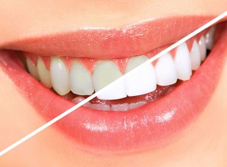

7 mitos e verdades do clareamento dental
12/02/2019
A união de um sorriso lindo e saudável faz com que muitos busquem alternativas rápidas e eficazes para os cuidados com os dentes. Prova disso é o sucesso do tratamento com alinhadores que substituem os braquetes e também do processo de clareamento, que devolve a tonalidade mais clara aos dentes.
Foi mais ou menos assim que o clareamento dental, caseiro ou de consultório, virou o queridinho na busca por um sorriso perfeito. Apesar da popularidade, o tratamento ainda desperta dúvidas e inseguranças nos pacientes.
Por este motivo, A Clínica Oral destaca os 7 mitos e verdades do clareamento dental:
1. Café, vinho e refrigerantes nunca mais!- Mito: Durante o tratamento de clareamento dental é recomendado que o paciente evite a ingestão de café, vinho e refrigerantes, assim como cigarro, chocolate e outros alimentos com corante, somente algumas horas depois do procedimento, estes itens não precisam ser cortados definitivamente do cardápio. Vale ressaltar que a ingestão de alimentos com alto teor de corante na composição alteram a cor do dente a longo prazo.
- Verdade: A sensibilidade varia de paciente para paciente e por este motivo é fundamental que o tratamento seja executado e supervisionado por um cirurgião dentista. É muito comum que durante o tratamento, caseiro ou de consultório, o paciente sinta sensibilidades passageiras, que podem ser amenizadas pelo dentista por meio do controle do tempo e concentração do produto clareador.
- Verdade: O clareamento caseiro é realizado com o gel clareador e uma placa, que é moldada no consultório. A concentração do gel clareador escolhida pelo dentista é que vai ditar a velocidade e sucesso do procedimento, o mesmo acontece no tratamento realizado no consultório.
- Mito: De uma forma geral, crianças e gestantes não devem fazer o tratamento. Além disso, o dentista deve avaliar o quadro clínico do paciente de forma geral para identificar a possibilidade de realizar ou não o clareamento.
- Mito: O clareamento dental não altera a estrutura dos dentes porque age apenas na dentina, que é a camada externa responsável pela cor dos dentes.
- Verdade: O agente clareador não age na cor das restaurações, sendo assim é comum acontecer uma desarmonia entre a cor dos dentes e das restaurações. Neste caso faz-se necessário avaliar a necessidade de retoque ou troca das restaurações antigas.
- Mito: O que interfere na efetividade do tratamento é o gel clareador manipulado pelo dentista. Além disso, o comprometimento do paciente com o clareamento caseiro também auxilia no alcance dos resultados desejados. O clareamento em consultório tem a concentração do agente clareador maior, o que acelera a ação, por este motivo uma sessão em consultório dura, em média, 60 minutos enquanto o tratamento caseiro pede que a placa seja usada com o gel por volta de 6 horas.
Cuide do seu sorriso, afinal ele é o seu cartão de visitas!
*Contribuiu Dra. Luiza Scotto